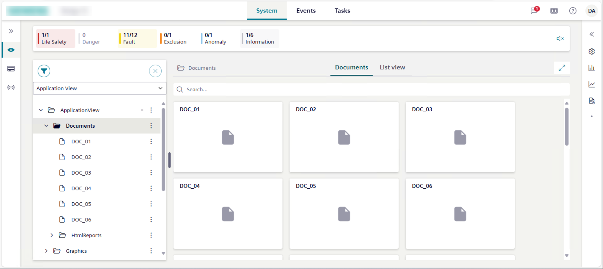

Documents
This section provides reference and background information for handling documents in the Flex Client application. These documents can be files (PDF, TXT, JPG) or web links (URLs of HTML pages). For related procedures, see the step-by-step section.

The availability of the Documents tab depends on your user group privileges.
If appropriate application rights are not set for you, the application will not be displayed.
Documents Workspace
Document objects are located in Application View, under Applications > Documents.
A folder is always available and contains a set of reports in HTML format for specific use. For more details, see HTML Reports.

- If you select Documents, the Documents tab displays all the available documents as tile icons.
- If you select a subfolder, the Documents tab displays only the documents available for that folder as tile icons.
You can view files or web pages. Specifically, in System Browser:
- If you select a file document, the relevant file opens in the Documents tab.
- If you select a web page document, if the relevant website is in the list of allowed websites, the corresponding web page opens in the Documents tab; otherwise, the web page opens in another browser tab.
If a file or web page document displays in the Documents tab, you can also open the same document in a new window or tab.
When viewing a document, its scroll position is not persisted along the same user’s session for example, when switching tab or context, or changing the layout.